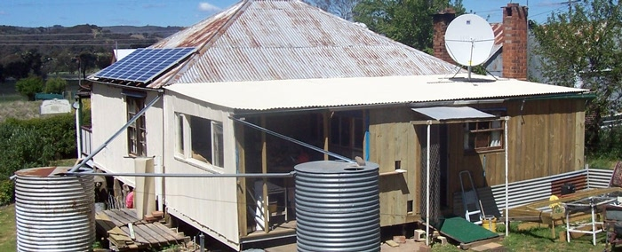
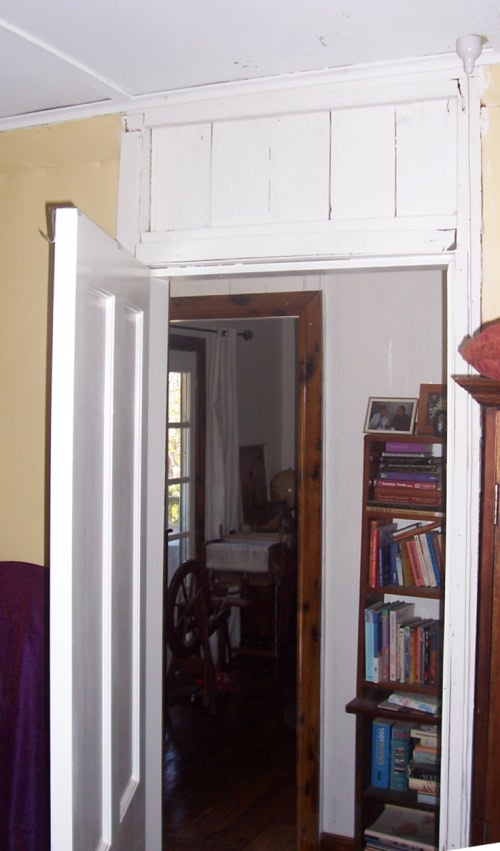
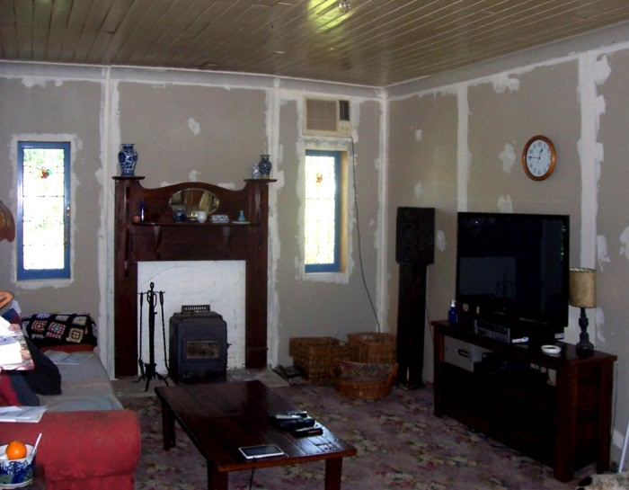
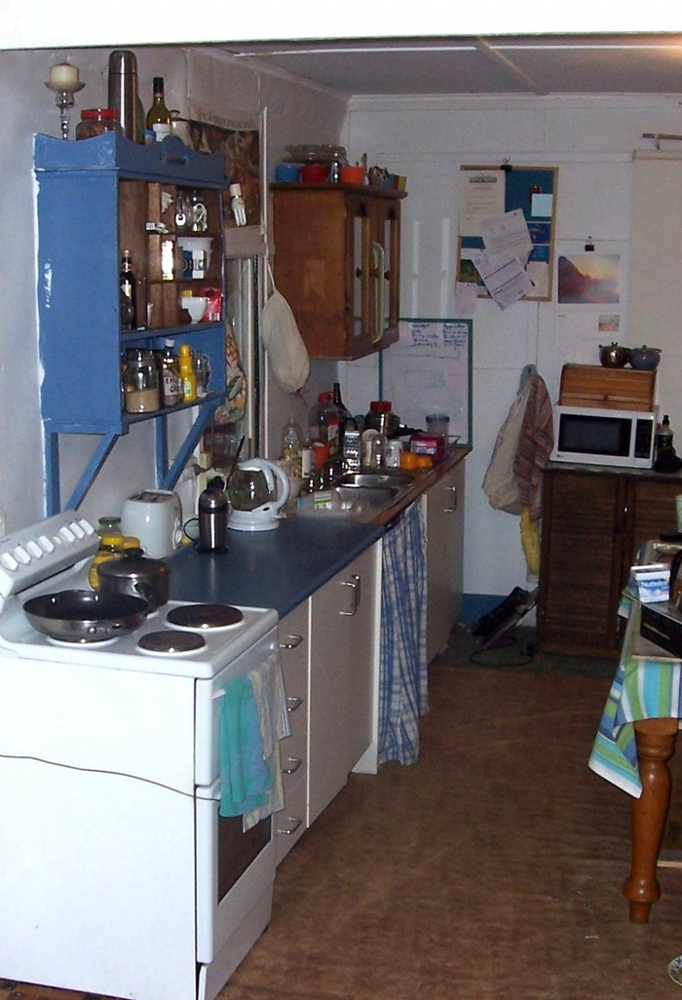
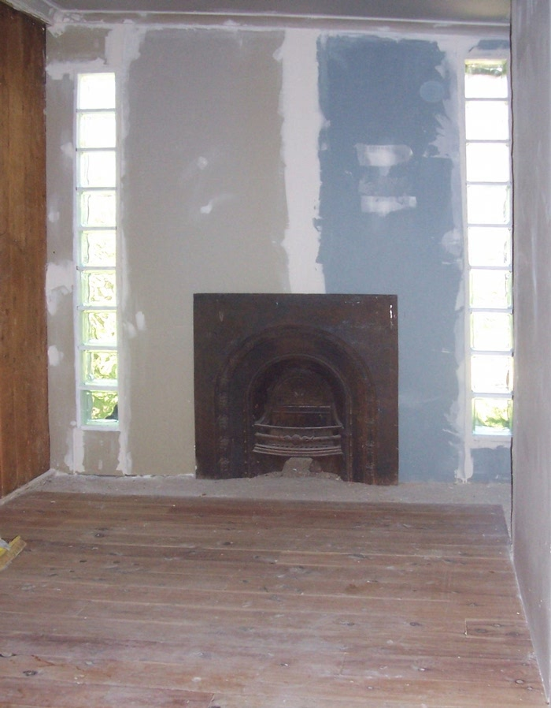
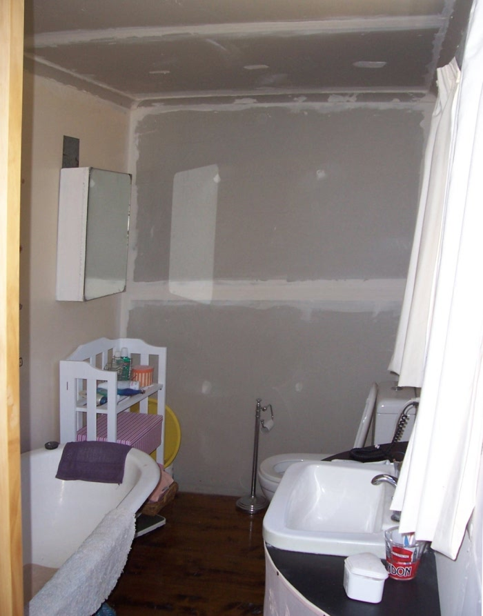
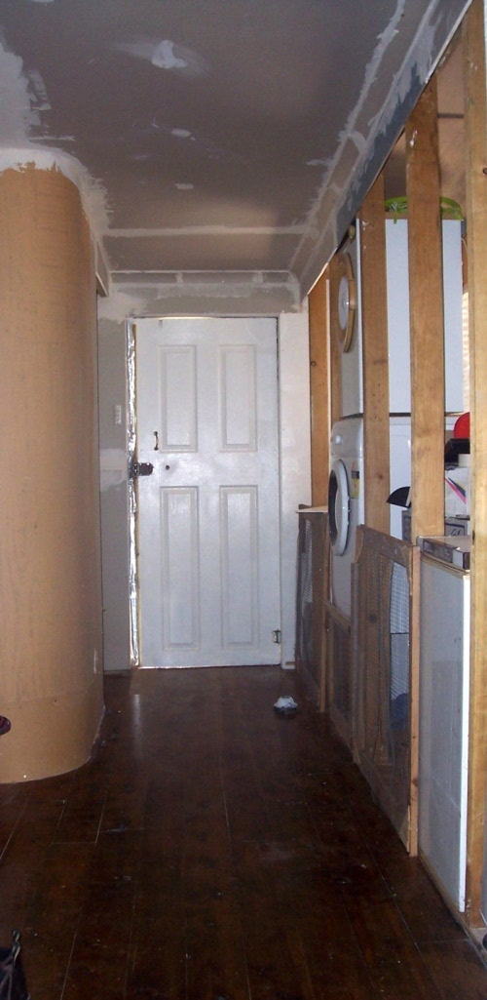
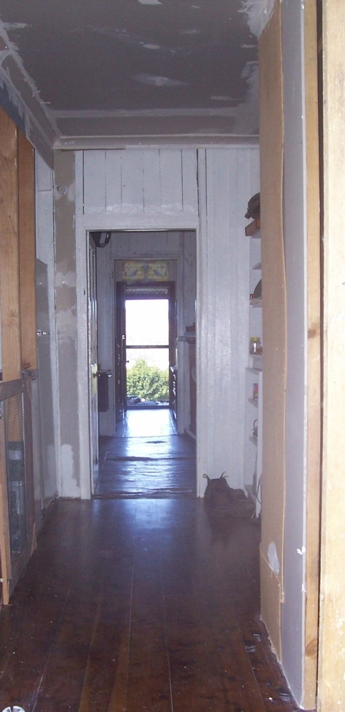
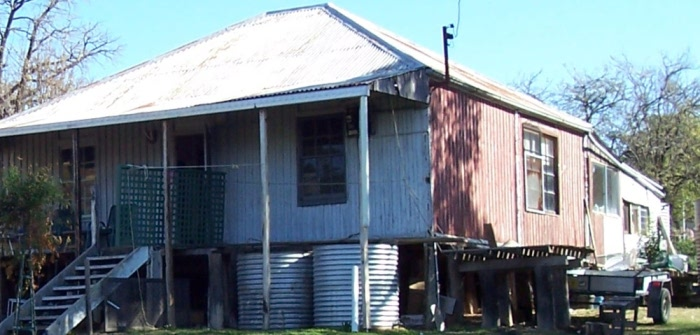
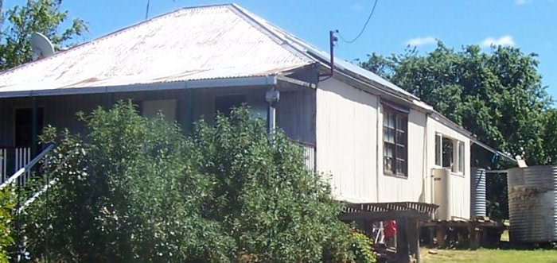

Snapshot of Progress October 2013
We're getting to the end of a major cycle of renovations that has seen the rear of the house transformed from the original closed-in verandah into a comfortable (and level!) bath-room and laundry area. In so doing we've also created the shell of what is to be our new kitchen which I'll be working on over the coming year. Also we've had an electrician in to completely re-wire the house including a modern fuse-box with earth-leakage cut-off (ie, electric shock protection).
I'll leave this page as the main page for a while so all my fans get see how the place is looking (okay,
both my fans) but you can click
hereto return to the old home page. I'll update the photos below once the new interior is properly painted.
The big dish on the roof is new - the "Interim NBN Satellite" service. It's much faster and cheaper per gigabyte than the old one, and they're planning to put a new satellite up (in space that is) next year to be even faster. Also note the upper and lower pet flaps, cats above (so they can get right away) and rabbit below (so he can get into a little enclosure I'll make for him soon).

Walking you through the house as it is now, the front hall and our bedroom are basically complete, but the other front room is still as it was:

The lounge room has had new lining and cornice:

Temporary Kitchen 2.0 is still like it's been for a couple of years (note oven door held shut with fencing wire):

Moving into the new section, the new room will be a massage room for a while, but in the future we intend it to be a bathroom:

But for now we've got Temporary Bathroom 2.0 (probably should be more like 4.0 considering how much the bathroom has changed over the time, but this is only the 2nd actual location of the bathroom... long story...):

Here's the rear hall, boasting some bare timber studs where the future kitchen starts. The stylishly curved MDF on the left is going to be demolished when the bathroom moves into the massage room and the current bathroom will be an expansion of the hall where the laundry stuff will be:

And looking towards the front:

And for all that work, the general shape of the outside of the house, when viewed from its most visible perspective, isn't that much different from before:


Home
House
October 2013
Asbestos
Verandah
Tanks
Fort Veg
Orchard
Pacas